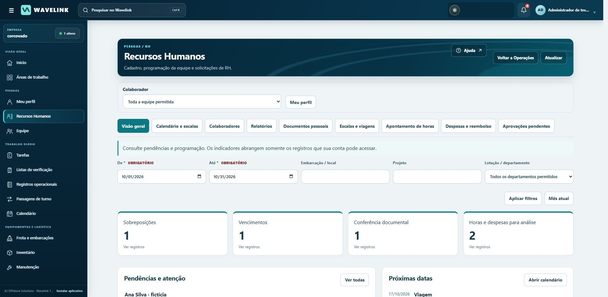
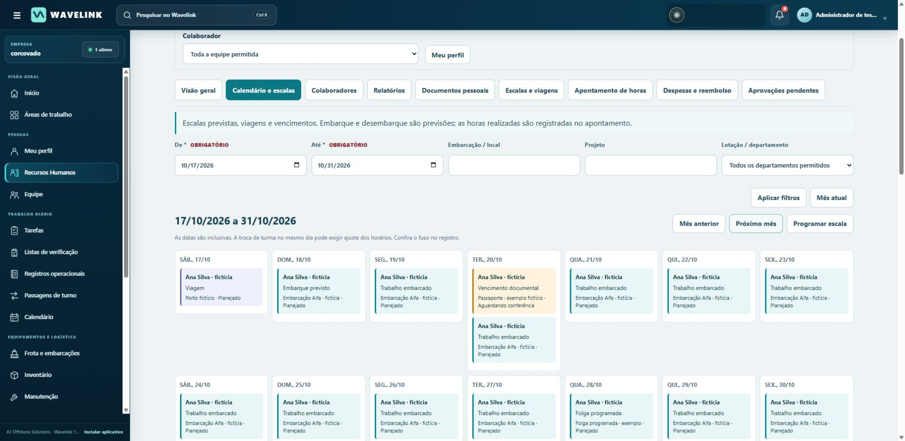
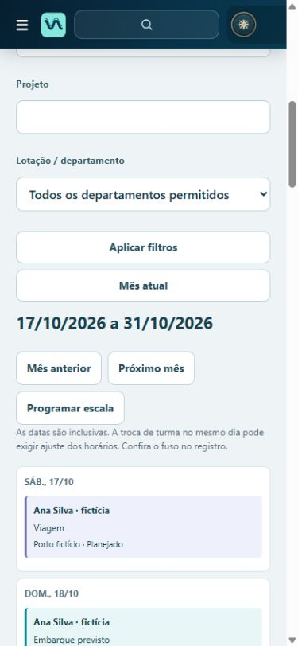
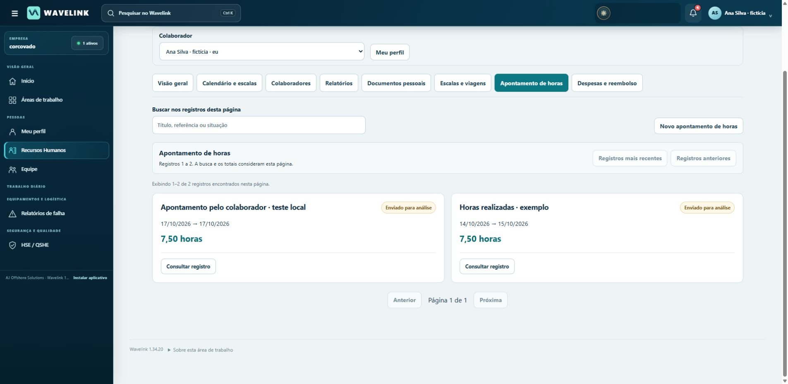

Recursos Humanos em português brasileiro
Área própria para planejar equipes, acompanhar colaboradores, conferir documentos e analisar horas e despesas. Versão UI120 · 1.34.20 · 17 de outubro de 2026.
Preparado e testado localmente · ainda não publicadoBase preservada: UI119, commit c435332618811aa29ac59e856a5ed922513f4e5e, incluindo o trabalho de RH/UI118.
Instruções em textoO que está pronto
- Área de RH com visão geral, calendário, cadastro de colaboradores, documentos, escalas e viagens, apontamentos, despesas, aprovações e relatórios.
- Planejamento por período, colaborador, local, projeto e departamento; alertas de sobreposição, documentos exigidos, vencimentos durante a escala e necessidade de equipe.
- Cadastro privado ligado às identidades existentes, permissões explícitas e conferência por outro responsável autorizado.
- Fluxos separados para enviar, devolver, rejeitar e aprovar; anexos com acesso autenticado; relatórios CSV sem transformar previsão em realização ou aprovação em pagamento.
- Vocabulário e ajuda em português brasileiro, incluindo distinções de RH e operação offshore; calendário adaptado ao celular.
A pesquisa foi aplicada à interface atual e aos novos relatórios. Conteúdos fornecidos por colaboradores e documentos históricos não são reescritos.
Este pacote é uma entrega local. Não houve novo commit no GitHub, deployment, alteração de DNS ou de dados reais. A versão exibida no endereço público da Corcovado não foi substituída por UI120.
Telas testadas no Chrome
As capturas usam exclusivamente pessoas, documentos e situações fictícias de um ambiente local isolado.




O que foi efetivamente validado
- Python: 190 casos únicos selecionados. A primeira execução aprovou 187 casos. Três expectativas estáticas de versões anteriores foram atualizadas e aprovadas na repetição. Os dois relatórios originais estão preservados; não se trata de uma única execução integral sem falhas.
- JavaScript: 16 verificações de comportamento aprovadas. Formulários, regras de revisão, números com vírgula, exportação CSV e tradução sem duplicidade.
- Chrome conectado: acesso de administrador e colaborador, área de RH e retorno a Operações, prévia autenticada de imagem, conferência documental, aprovação de horas e reembolso, cadastro privado, necessidade de equipe, filtros e agenda em celular. O colaborador lançou 7,5 horas, enviou para análise e perdeu a opção de editar após o envio.
- Reconstrução: cadeia original reconstruída e aplicação final verificada sobre a base UI119 exata. Conferidos 2.261 recursos; base alterada e reaplicação da atualização foram recusadas antes de gravações indevidas.
- Proteção dos dados: testes de acesso indevido, revogação, autoaprovação, anexos privados e backup SQLite com integridade e comparação das tabelas de RH, incluindo novos cadastros e necessidades.
As evidências completas estão em docs/UI120_VALIDACAO.json e docs/validation/ dentro do ZIP.
Ainda precisa de verificação: build da imagem Linux/Render, implantação e dados reais, prévia de PDF em diferentes navegadores, envio real de notificações, desempenho em grande volume e aceite operacional pela equipe. Nenhum e-mail ou mensagem foi enviado nesta etapa.
Manifesto final: 03824bd51a9826cf0e723b1b9ff1516ddd420b5ea487438d01466df70e0cab5c. O arquivo DEPLOYMENT_FILES.json verifica os arquivos do repositório; o manifesto de recursos verifica o aplicativo reconstruído.
Vocabulário de RH brasileiro — UI120
Pesquisa consultada em 17/10/2026. Decisões de nomenclatura e fluxo para o Wavelink; não constituem uma certificação trabalhista ou de habilitação para embarque.
| Termo adotado | Significado no aplicativo |
|---|---|
| Cadastro de colaboradores | Dados vinculados à conta existente. Nome, acesso e lotação vêm dos cadastros da empresa; contatos e dados profissionais ficam na área privada de RH. |
| Cargo / função | Atuação profissional. Não é a função de acesso (administrador, supervisor etc.). |
| Lotação / departamento | Unidade organizacional do colaborador, reutilizada de Operações. Separada da embarcação/local de trabalho. Não é cadastro de lotação tributária do eSocial. |
| Escala de trabalho | Programação de períodos de trabalho, folga, afastamento ou disponibilidade informada. Pode estar planejada ou confirmada. |
| Turno e jornada | Turno identifica a faixa de trabalho; início, fim e fuso descrevem o horário previsto. Jornada não é sinônimo de ciclo de embarque. O Wavelink não calcula intervalos, banco de horas ou adicionais. |
| Embarque / desembarque previstos | Marcos da escala embarcada. Confirmação da programação não comprova a realização do deslocamento nem presença. |
| Necessidade e cobertura de equipe | Quantidade necessária por função, local e período. Pessoas distintas com escalas confirmadas vinculadas preenchem a cobertura prevista; propostas ficam separadas. |
| Disponibilidade informada | Situação registrada explicitamente. Ausência de escala significa “sem programação registrada”. |
| Folga programada / afastamento | Folga é período previsto de descanso. Afastamento registra indisponibilidade para o trabalho; não exige exposição pública do motivo clínico. |
| Apontamento de horas | Declaração de horas por data e atividade, enviada para análise independente. Não é folha de pagamento, batida de ponto ou cálculo automático de jornada. 7,5 horas equivalem a 7 h 30 min. |
| Gestão documental / vencimento | Cadastro, arquivos, conferência e datas de documentos pessoais. Validade informada e conferência são situações independentes; “sem vencimento informado” não significa válido. |
| Documento enviado / conferido | Enviado: arquivo anexado. Conferido: outro responsável autorizado registrou a revisão. Alterar dados ou anexos reabre a conferência. Não declara aptidão médica. |
| Prestação de contas | Apresentação de despesa, contexto e comprovante para análise. O menu é “Despesas e reembolso”, pois não há gestão de adiantamentos nem conciliação financeira. |
| Reembolso aprovado | Despesa aceita por outro responsável autorizado. Não significa pagamento realizado. Devolução pede correção; rejeição encerra aquela submissão com motivo. |
| CIR, ASO, CBSP e HUET | CIR: Caderneta de Inscrição e Registro; ASO: Atestado de Saúde Ocupacional; CBSP: Curso Básico de Segurança de Plataforma; HUET: treinamento de escape de helicóptero submerso. O tipo genérico “Documento de saúde ocupacional” não transforma qualquer atestado em ASO. Modalidades como THUET devem constar com sua denominação no documento e ser conferidas conforme a exigência aplicável; o sistema não presume equivalência. |
Fontes profissionais brasileiras e aplicação
- Senior HCM — Apuração do Ponto. A documentação separa programação, registro/apuração, ajustes, aprovação e posterior integração com folha. Orientou a separação entre escala prevista, apontamento e folha, além do fluxo colaborador–revisor. O Wavelink mantém apenas os processos efetivamente implementados, sem simular cálculo de folha ou apuração regulamentada.
- Senior HCM — Definições de Lotação. A acepção tributária não deve ser confundida automaticamente com local físico. Por isso a interface explicita “Lotação / departamento” e mantém “Embarcação / local” separado.
https://documentacao.senior.com.br/gestao-de-pessoas-hcm/6.10.4/rubi/fr030dlo/
- TOTVS — Tutorial Prestação de Contas (2020). A rotina distingue lançamento, hierarquia de aprovação, prestação de contas e processo financeiro. Orientou “despesa apresentada”, “análise” e “reembolso aprovado” como etapas distintas de pagamento. Não foram copiados módulos de adiantamentos ou contas a pagar.
https://centraldeatendimento.totvs.com/hc/pt-br/article_attachments/360071200613
- Petrobras — ET-3010.00-1260-010-PNG-073, revisão F (11/03/2024). Exemplo real de contratação offshore com documentação de pessoal, capacitação, programação de atendimento e necessidade de substituição após desembarque, considerando folgas e afastamentos. Fundamentou marcos de embarque/desembarque, troca de turma, necessidade de equipe e conferência documental. Seus requisitos e limites específicos não foram transformados em regras universais: ciclo e documentos exigidos são informados pelo RH.
- OceanPact — Pessoas. Exemplo brasileiro de empresa marítima/offshore com equipes de várias especialidades. Orientou o uso de “colaboradores” como conjunto e “cargo / função” específico, sem tratar toda pessoa embarcada como marítimo ou exigir CIR de todos indiscriminadamente.
https://oceanpact.com/oceanpact/recursos-humanos/
As conclusões de interface são decisões de implementação apoiadas nessas fontes, não afirmações de que os produtos citados funcionam exatamente como o Wavelink. Nenhuma fonte em inglês foi necessária para definir o vocabulário principal. Textos de documentos históricos e conteúdos fornecidos por colaboradores não são traduzidos nem reescritos.
Instalação e revisão — UI120 / Wavelink 1.34.20
Estado desta entrega
Pacote completo preparado a partir de adriano5454-ai/wavelink, main c435332618811aa29ac59e856a5ed922513f4e5e (UI119), que inclui UI118. UI120 foi testada localmente com contas fictícias. Este trabalho não publica código nem muda Render, DNS, domínio, banco ou usuários da Corcovado. O pacote não contém banco de produção, senhas de usuários nem documentos reais.
O repositório conserva seu formato: fonte original em vendor/source.part*, seguida das atualizações verificadas deploy/apply_ui*.py. O Dockerfile inclui UI120 ao final. Não é um ZIP somente de alterações. Para obter a árvore completa e legível do aplicativo, execute:
python deploy/materialize_runtime.py ./runtime-ui120
O destino deve ser novo. A ferramenta valida cada etapa, todos os recursos finais e não inicia o aplicativo. Consulte docs/UI120_SOURCE_PROVENANCE.json e DEPLOYMENT_FILES.json para os hashes. Não edite um overlay antigo para contornar divergências de versão.
Instalar uma atualização de um serviço existente
- Compare o main atual com o commit-base acima. Caso haja trabalho posterior, integre-o em uma cópia separada e refaça os testes; o instalador recusa uma base diferente. Preserve especialmente UI118, UI119 e a migração Corcovado.
- Faça backup verificado do diretório completo da empresa com os processos gravadores parados de fato, como o proprietário dos arquivos. Confira integridade do SQLite e possibilidade de restauração. Uma tela de manutenção não substitui a parada dos processos. Não use um backup antigo como se fosse o ponto de recuperação desta atualização.
- Construa e valide primeiro em homologação: docker build -t wavelink:ui120 . O build de imagem Linux/Render ainda precisa ser executado no ambiente de publicação; a reconstrução do aplicativo e os testes Python/JavaScript foram realizados localmente.
- Na publicação autorizada, use o mesmo serviço, disco, modo COMPANY e diretório persistente. Preserve COMPANY_ID, COMPANY_NAME, PUBLIC_URL, segredos de e-mail/autenticação e todos os demais parâmetros existentes. INITIALISE_COMPANY deve continuar NO. Não importe FICTIONAL_DEMO.ajproject; ele é um recurso anterior preservado no repositório, não a inicialização da Corcovado.
- Não execute rename_company.py nem qualquer limpeza/reset novamente. A mudança de identidade e o reset anterior são independentes desta versão.
- Após publicar, valide login, Recursos Humanos, permissões de cada conta, leitura dos registros existentes, anexos privados, rascunhos, filtros, exportações e retorno a Operações. Teste notificações conforme as preferências reais antes de habilitar novos envios.
Onde encontrar
Pessoas → Recursos Humanos abre uma área própria: Visão geral; Calendário e escalas; Colaboradores; Relatórios; Documentos pessoais; Escalas e viagens; Apontamento de horas; Despesas e reembolso; Aprovações pendentes. “Voltar a Operações” abre o início operacional.
O calendário oferece agenda diária e tabela de equipe, com filtros de período (até 93 dias), colaborador, embarcação/local, projeto e lotação/departamento. Em telas estreitas, vira uma agenda vertical. Sobreposição é um alerta para revisão, inclusive na troca de turma no mesmo dia; não há decisão automática sobre aptidão.
Em Calendário e escalas, cadastre uma necessidade de equipe e vincule escalas a ela. A cobertura por dia conta pessoas distintas com programação confirmada; não soma a mesma pessoa duas vezes. A referência do ciclo de trabalho/folga não gera automaticamente novas escalas. Cadastre a folga ou afastamento em um registro próprio para refletir a programação real.
Em Colaboradores, reutilize contas e lotações existentes. A criação de conta continua em Administração → Usuários e acesso (ou pelo fluxo existente de convite). Não existe uma segunda lista independente de identidades de RH.
Permissões
A administração escolhe deliberadamente quais capacidades cada conta recebe. As permissões de gestão/revisão existentes têm abrangência da empresa; o filtro de departamento é de consulta, não uma restrição de segurança por departamento.
| Perfil de uso | Capacidades |
|---|---|
| Colaborador | hr.view_own e, conforme a função, hr.documents_submit, hr.timesheets_submit, hr.expenses_submit. Contatos próprios editáveis; dados profissionais mantidos pelo RH. |
| RH de cadastro | Nova hr.people_manage, para contatos/dados profissionais privados de outros colaboradores. Não é habilitada automaticamente para não administradores. |
| RH documental | hr.documents_manage. Conferência por pessoa diferente do titular e de quem alterou a evidência. |
| Planejamento / viagens | hr.shifts_manage para escalas, necessidades e cobertura; hr.travel_manage para viagens. Não concedem acesso a passaportes ou dados médicos de terceiros. |
| Supervisor / revisor | hr.timesheets_review e/ou hr.expenses_review. Autoaprovação bloqueada, inclusive para administrador. |
Perfil público, Equipe, busca geral e páginas operacionais não passam a expor os contatos ou documentos privados. Relatórios usam somente registros retornados para a conta autorizada. A exportação completa de backup continua restrita por sua política anterior.
Dados e reversão
A alteração é aditiva, utilizando as tabelas privadas existentes de RH: registros, anexos, auditoria e recibos de operação. Não muda IDs de contas, senhas, equipamentos, departamentos, inventário nem documentos históricos. Pessoas e necessidades são novos tipos; a conferência é registrada separadamente da validade. Arquivos retirados permanecem no histórico conforme a política existente. Não há substituição indiscriminada de textos no banco.
Registros anteriores sem conferência explícita aparecem como “Aguardando conferência”; não ganham aprovação fictícia. Escalas antigas recebem valores de leitura conservadores, sem fabricar necessidade de equipe, disponibilidade ou documentos exigidos. Edição por clientes antigos conserva campos novos omitidos quando aplicável; evite manter clientes antigos gravando durante a troca.
Para reversão após gravações UI120, pare os gravadores e prefira correção para frente. Restauração do backup pré-publicação precisa preservar/reconciliar o trabalho posterior. Não foi validada operação de UI119 sobre dados novos UI120; não faça downgrade cego nem apague os novos tipos para fazê-lo funcionar.
Limites e validações restantes
- Cobertura exige necessidade cadastrada e vínculo explícito; não comprova presença, habilitação documental ou aptidão médica. Confirmações concluídas historicamente contam como programação registrada, não como ponto realizado.
- Consulta limitada a 3.000 registros acessíveis e 500 necessidades. O limite é sinalizado; cobertura incompleta não é apresentada como cálculo confiável. Documentos são consultados pelo acervo ativo, não apenas por data de emissão.
- Filtro por local/projeto seleciona escalas e seus colaboradores; documentos/horas/despesas dessas pessoas não são atribuídos automaticamente ao mesmo projeto. Cobertura de necessidades considera a equipe inteira, mesmo com filtro de pessoa/departamento, conforme a ajuda exibida.
- Não há folha de pagamento, banco de horas, registro eletrônico de ponto, execução de pagamento/reembolso, compra de passagem, validação externa de certificados ou integração eSocial.
- Relatórios são tabelas e CSV, incluindo cobertura. CSV neutraliza fórmulas e separa programação, conferência e aprovação; não é um demonstrativo de pagamento.
- Histórico, limites de upload, proteção de anexos e revisão independente permanecem. Prévia de imagens foi validada no Chrome; prévia de PDF depende do visualizador do navegador e oferece download autenticado como alternativa.
- Testes de e-mail deste pacote usam infraestrutura simulada; não foram enviados e-mails ou mensagens a terceiros. Publicação, imagem Linux, desempenho em grande volume e aceite dos fluxos com a equipe real ainda precisam de validação.
Consulte UI120_VALIDACAO.json para a evidência executada e UI120_GLOSSARIO_FONTES.md para o vocabulário pesquisado.
Reproduzir os testes selecionados
Use Python 3.12 (versão utilizada nesta validação) e Node.js em uma cópia local isolada, com as dependências de produção e as dependências adicionais de teste instaladas. Os testes criam empresas e contas fictícias temporárias. Não aponte variáveis de dados para a empresa real.
python -m pip install -r requirements.lock -r tests/requirements-ui120.txt
python deploy/materialize_runtime.py ./runtime-ui120
python tests/run_ui120_checks.py ./runtime-ui120 --junitxml=ui120-resultados.xml
node runtime-ui120/tests/test_hr_forms_ui120.cjs
O relatório entregue contém 187 aprovações na primeira execução Python e três verificações estáticas antigas corrigidas e aprovadas na repetição (190 casos únicos no total). Não representa uma única execução integral sem falhas. As três expectativas antigas se referiam a versões de recursos e caminho/hash do inicializador, não a falhas de fluxo de RH. O comando acima seleciona os mesmos 190 casos na versão final. O teste JavaScript executa 16 verificações de comportamento dos formulários e exportação.